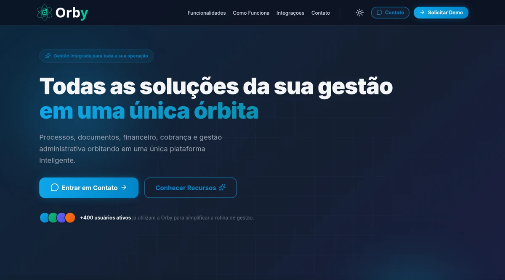
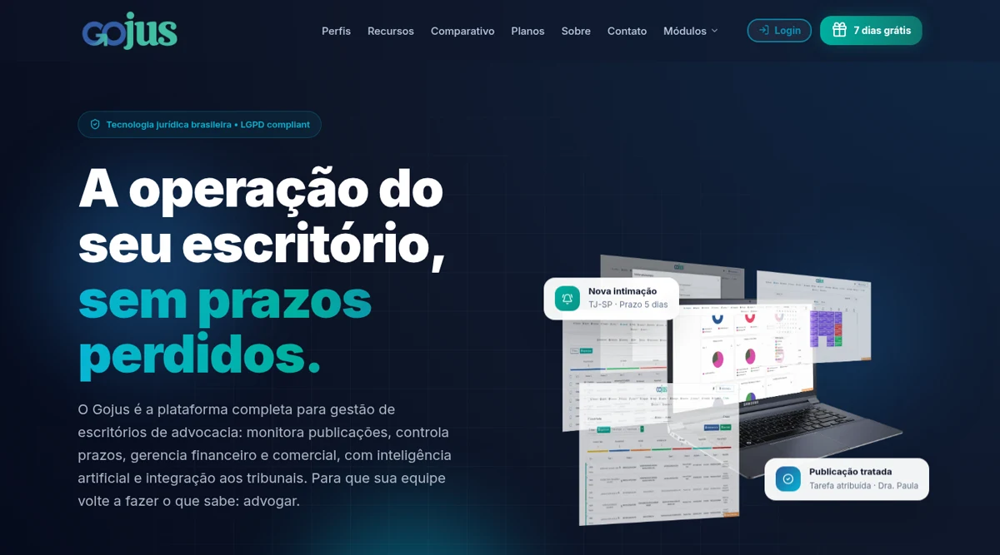
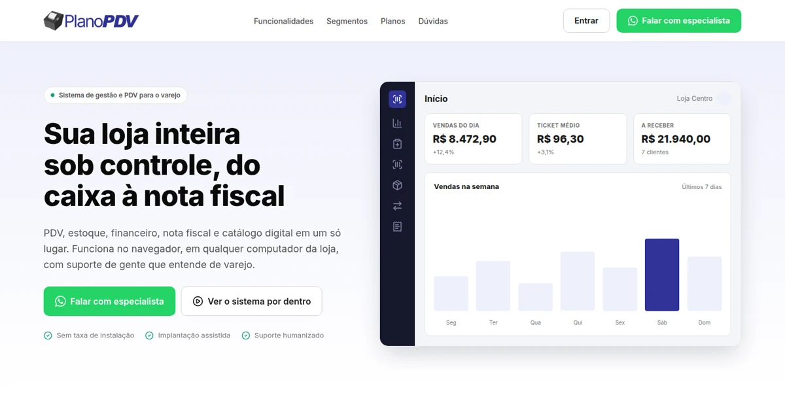

Frontend
Criação e manutenção de interfaces web, arquitetura de componentes e evolução contínua.
Como eu atuo
Minha atuação principal está no frontend: sou responsável pela criação, evolução e manutenção das interfaces das plataformas em que trabalho. Também atuo no backend, principalmente com APIs, regras de negócio, integrações e manutenção de funcionalidades existentes.
Trabalho em produtos para os setores público e privado, acompanhando sua evolução do conceito à operação em produção.
Criação e manutenção de interfaces web, arquitetura de componentes e evolução contínua.
Desenvolvimento de APIs, regras de negócio, integrações e manutenção de serviços.
Aplicativos Gojus e Orby, incluindo versões e customizações para clientes institucionais.
Trabalho em produção
Atuação contínua em plataformas web e mobile, com responsabilidades claras no frontend e participação no backend. Hoje, Orby e Gojus concentram essa experiência.

Plataforma de gestão para instituições públicas, governamentais e institucionais. Atuo na evolução do frontend e do backend, no aplicativo em React Native e em versões e customizações específicas para diferentes clientes.

Plataforma de gestão jurídica para escritórios de advocacia. Sou responsável pela criação, evolução e manutenção do frontend, além de atuar no backend com APIs, regras de negócio e integrações e no aplicativo em React Native.
Outras experiências

Plataformas de assistência médica e saúde com sistemas web, áreas administrativas e mobile.

Frontend do e-commerce de materiais de construção e participação no sistema de gestão.

Landing page e frontend do ERP voltado à gestão de micro e pequenas empresas.
Visitar site
Reescrita das interfaces do site, marketplace e sistema de gerenciamento da plataforma.
Vamos conversar
Posso contribuir na construção de interfaces, APIs, integrações e aplicativos mobile. Escolha o canal que for melhor para você.